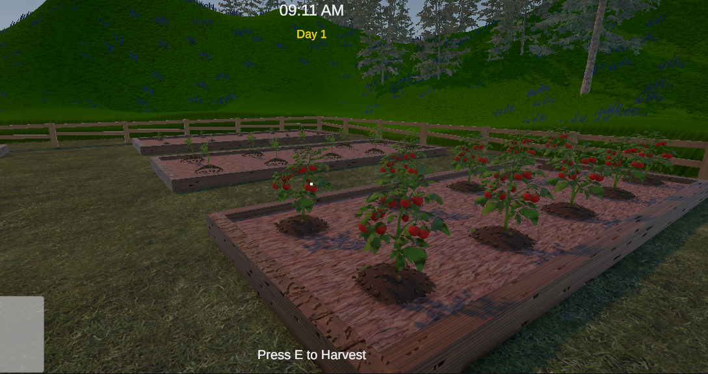
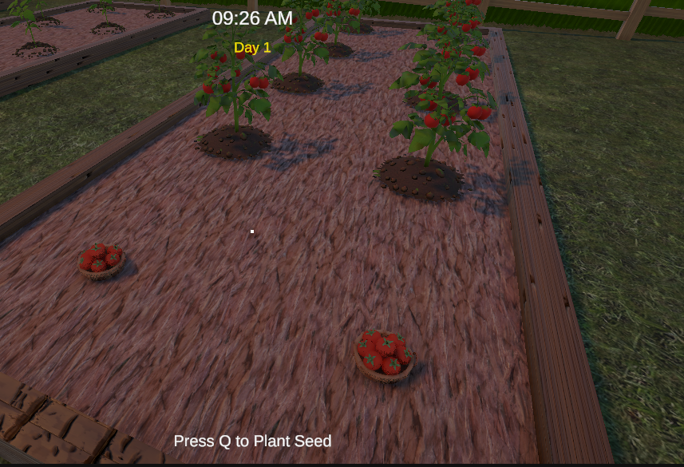
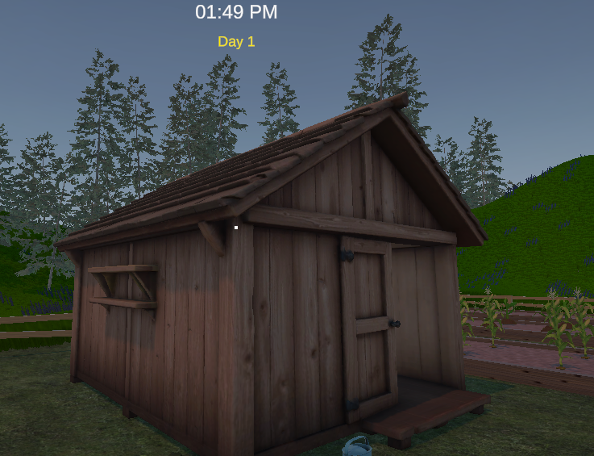

Unity Game Developer | C# | CSE Student
I'm a Computer Science and Engineering student with a strong focus on Unity game development. I build complete, playable games from scratch — handling everything from gameplay systems and AI to save/load, UI, and audio. My most recent project, Greenhand, is a full 3D first-person farming simulator built solo in Unity 6 with URP. I am actively seeking part-time remote game development opportunities where I can contribute real value while continuing to grow as a developer.
A full 3D first-person farming simulator built solo in Unity 6 (URP). Features include a complete plant growth system with watering and fertilizing mechanics, 7 unlockable plant beds, 2 crop types, a customer queue and selling system, day/night cycle with sleep mechanics, tool upgrade system, NavMesh-based customer AI, and a full JSON save/load system.



| Degree | Institution | Year | Result |
|---|---|---|---|
| SSC (Science) | Navy Anchorage School & College, Khulna, Bangladesh | 2020 | GPA 5.00 |
| HSC (Science) | Navy Anchorage School & College, Khulna, Bangladesh | 2022 | GPA 5.00 |
| BSc in CSE | North Western University, Khulna, Bangladesh | 2028 (Expected) | Ongoing |
Email: hmhemel45@gmail.com
Phone: +8801710392967
Khulna, Bangladesh